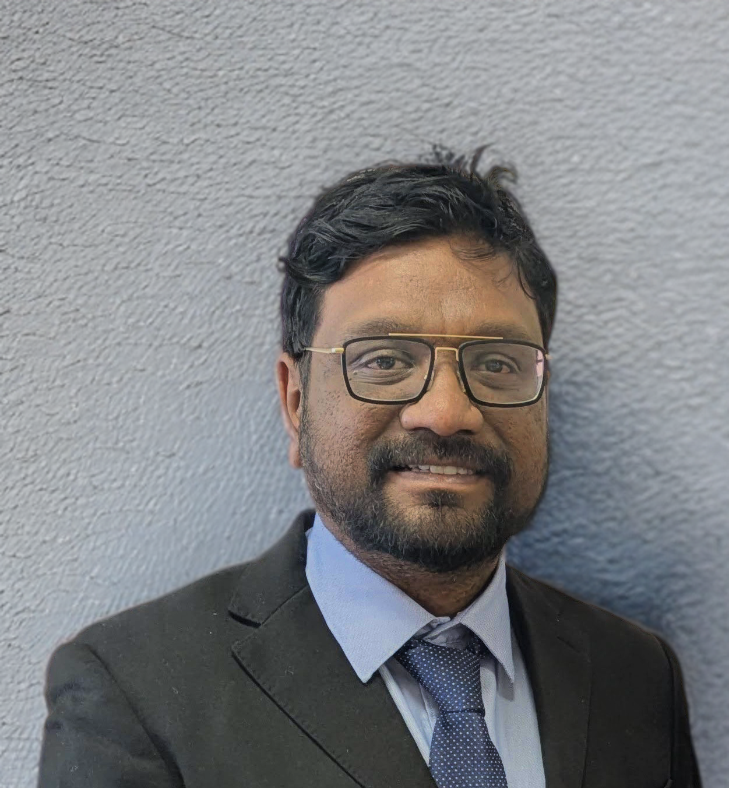

My research develops robust multimodal perception and learning for intelligent systems — addressing missing modality, sensor fusion, and deep learning across camera, LIDAR, radar, thermal, and audio sensors. Applications span autonomous driving, humanoid robotics, and human motion analysis.
KModNet and cascaded frameworks that classify using any subset of sensor modalities — making perception robust when cameras, microphones, or depth sensors are absent.
Metric Learning KModNet TransformersRVNet, SO-Net, ChiNet, PsiNet — deep fusion frameworks for obstacle detection, lane estimation, and semantic segmentation across camera, radar, and LIDAR.
RVNet ChiNet LIDAR-RadarMultimodal person classification, audio-visual emotion recognition, and gesture recognition for next-generation social robots.
Emotion Recognition HRI Weak SupervisionAutomatic extrinsic calibration of LIDAR–stereo pairs and non-overlapping camera networks without calibration targets, enabling rapid deployment.
Bayesian Inference PSO Re-IDI welcome partnerships with industry (automotive, robotics, healthcare) and academic groups on funded research, joint publications, and student co-supervision.
vjohn@ltu.edu Google Scholar ↗